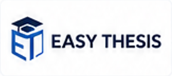
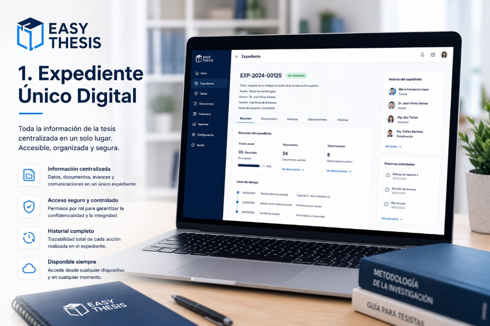
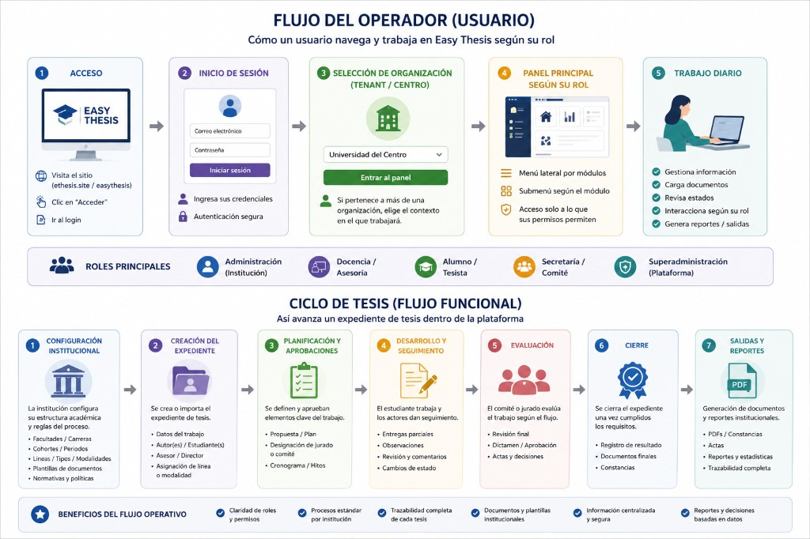
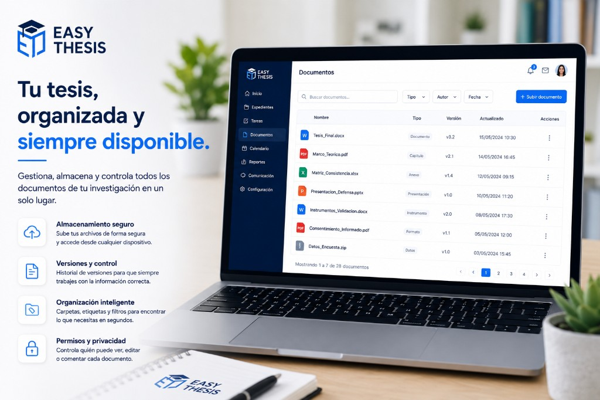
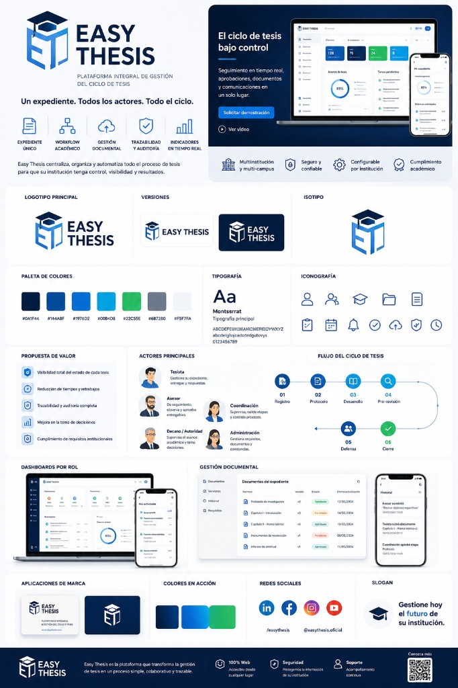
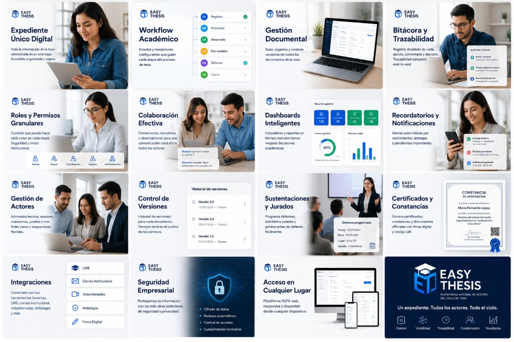

Multiinstitución
Gestione múltiples facultades, sedes y programas desde una sola plataforma.

Plataforma integral de gestión del ciclo de tesis
SaaS multi-tenant para universidades: centralice el expediente único, automatice el workflow académico, controle versiones documentales y mantenga trazabilidad auditada de principio a fin.
¿Implementación con EasyTech? Contacto · Agendar cita

Gestione múltiples facultades, sedes y programas desde una sola plataforma.
Cada actor tesista, asesor, coordinación o administración con el acceso que necesita.
Estados, avances, observaciones y próximas acciones siempre visibles.
KPIs y reportes para decisiones académicas y estratégicas.
Auditoría completa, trazabilidad y control de requisitos académicos.
Correos interminables, archivos dispersos, versiones confusas y seguimiento manual que genera errores y retrabajo.
Archivos y comunicaciones repartidos en múltiples cuentas y carpetas.
Incertidumbre sobre cuál es la versión final del documento.
Revisar avances y pendientes consume demasiado tiempo del equipo.
Observaciones fuera de plazo, fechas incumplidas y estrés constante.
Toda la información de la tesis centralizada en un solo lugar: accesible, organizada y segura.
Easy Thesis reúne datos, documentos, avances y comunicaciones en un expediente digital por trabajo de grado. Cada actor accede según su rol, con historial completo y trazabilidad de cada acción.

Seis capacidades integradas para digitalizar el ciclo completo de tesis en su institución.
Expediente
Toda la información de la tesis centralizada: datos, documentos, avances y comunicaciones en un solo lugar.

Workflow
Estados y transiciones configurables que guían cada etapa del proceso según las reglas de su institución.

Documentos
Suba, organice y controle versiones de protocolos, capítulos, anexos y entregables con historial completo.
Trazabilidad
Registro detallado de cada acción, comentario y decisión con trazabilidad end-to-end.
Seguridad
Controle qué puede ver, editar o aprobar cada actor en cada etapa del ciclo de tesis.

Datos
Dashboards, KPIs y reportes para coordinación, decanato y autoridades con visibilidad operativa.

Del registro al cierre: un flujo estandarizado, configurable y trazable para cada expediente.
Organice protocolos, capítulos, matrices, anexos y entregables con control de versiones, permisos y filtros por tipo, autor y fecha.
Su institución deja de depender de carpetas compartidas, correos y mensajes sueltos: cada documento queda vinculado al expediente con trazabilidad completa.
Cada rol participa en el mismo expediente con permisos, tareas y visibilidad acordes a su función.
| Actor | Función principal | En la plataforma |
|---|---|---|
| Tesista | Desarrolla la investigación y entrega documentos | Sube versiones, responde observaciones y consulta avances |
| Asesor | Orienta, revisa y valida entregables | Comenta, aprueba etapas y da seguimiento al expediente |
| Coordinación | Supervisa cohortes, plazos y cumplimiento | Monitorea KPIs, asigna recursos y gestiona excepciones |
| Decano / Autoridad | Decisiones académicas e institucionales | Consulta reportes, estados agregados y trazabilidad |
| Administración | Configura reglas, plantillas y estructura | Define workflow, roles, documentos y políticas por facultad |
Easy Thesis conecta expediente, workflow, documentos, actores e indicadores en una plataforma SaaS pensada para universidades multi-campus. Menos fricción operativa, más control y visibilidad para su institución.
Solicite una demo guiada de Easy Thesis o acceda a la plataforma si ya tiene cuenta institucional.